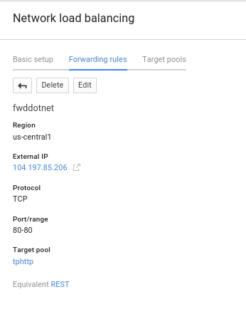
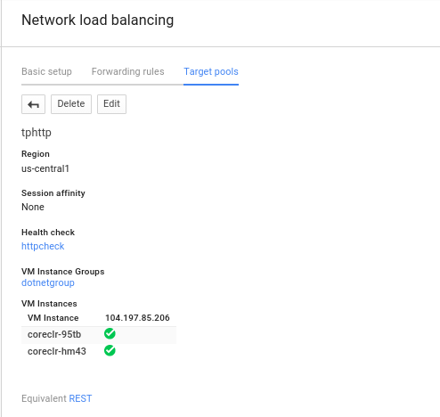
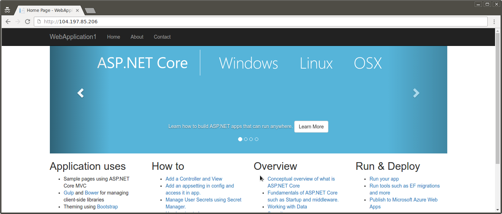
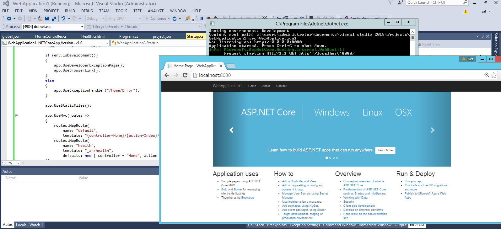

ARTICLES
.NET on GCP
12/30/19: NOTE: as you can clearly tell, this article is dated. DO NOT use this (i’m leavig it up as a matter of record)
Sample code demonstrating running trivial .NET web applications on Google Cloud Platform services.
These simply builds off of existing technologies and samples but configures it to run on GCP effeciently with healh checking and load balancing.
The example here uses Microsofts’s .NET Core 1.0.0 RC/preview (dotnet-dev-1.0.0-preview2-003121).
microsoft/dotnet:1.1.0-sdk-projectjson
If you’re still interested, you can find the source here
FROM microsoft/dotnet:1.1.0-sdk-projectjson
ADD . /app
WORKDIR /app
RUN ["dotnet", "restore"]
EXPOSE 8080
WORKDIR /app/src/WebApplication1/
ENTRYPOINT ["dotnet", "run", "-p", "project.json"]
in project.json:
"Microsoft.NETCore.App": {
"type": "platform",
"version": "1.1.0"
}
You can use Visutal Studio 2015 to create and extend the sample from scratch. VS2015 * WebApplication1 Default webapplication generated by Visual Studio 2015: “New Project * C# * Web * ASP.NET Core Web Application (.NET Core) ; (Change Authenticaiton –> No Authentication)
(optionally, if you want to try out Google APIs, see Using Google API Libraries)
The platforms that are demonstrated here are:
Basic Configuration
Sample application simply spins up inside a Docker container an runs Kestrel to host the application. The sample is modified from the baseline in the following way to run with healthchecks in GCP:
- port: 8080
- GET requests to endpoint /_ah/health must return a 200 OK HTTP response
- Use Kestrel Webserver
WebApplication1
To run the code directly from the source dockerhub image:
docker run -p 8080:8080 docker.io/salrashid123/mvc
The only endpoint you cant access is /gcs as that requires access to your hosts applicaton default credentials though you can work around that using GCE Metadata Server Emulator.
If you prefer using rkt,
sudo rkt run --insecure-options=image docker://salrashid123/mvc
rkt list
UUID APP IMAGE NAME STATE CREATED STARTED NETWORKS
36a7ac5b mvc registry-1.docker.io/salrashid123/mvc:latest running 4 seconds ago 4 seconds ago default:ip4=172.16.28.19
curl http://172.16.28.19:8080
To build from the git repo
cd WebApplicaton1
docker build -t mvc .
docker run -t -p 8080:8080 mvc
As reference, the following files were modified to listen on :8080 and for healthchecks on /_ah/health:
- Startup.cs
- Program.cs
- Controllers/HomeController.cs
- Views/Health.cshtml
- Views/GCS.cshtml
- project.json
- Dockerfile
- global.json
- hosting.json
To run localy without Docker, install dotnet-dev-1.0.0-preview2-1-003177 as shown in the Dockerfile and off of the microsoft .net install guides. Once installed, then,
cd src\WebApplication1\
dotnet restore
dotnet run
Using Google Cloud Libraries
You can even use Google Cloud APIs on docker now. Just reference Google.Cloud.Storage.V1 version of .net libraires.
After you reference it, you call GCP apis direclty under path /gcs. For example, see: * project.json * HomeController.cs * Views/GCS.cshtml
in project.json, specify
"Google.Cloud.Storage.V1": "1.0.0-beta07"
The following list out some objects in the public USPTO GCS bucket. If you want to list the objects in your on project, please change uspto-pair while deploying the sample (you’ll need to rebuild the docker image).
using Google.Cloud.Storage.V1;
var ret = "";
var client = StorageClient.Create();
foreach (var obj in client.ListObjects("uspto-pair", "").Take(100))
{
ret = ret + " " + obj.Name + " ";
}
NOTE > If you want to build and run the docker container with GCP API code, you will need to provide the container some way to acquire an access_token for GCP. > There are serveral ways to do that:
- Run the GCE Metadata Server Emulator.
- Pass in json certificate file to the container: Alternatives to Metadata tokens for containers
Pack/Publish steps
If you want to pack the deployment to a .dll using dotnet publish
in project.json, if the following artifiact from Visual Studio exists, remove
"scripts": {
"prepublish": [ "bower install", "dotnet bundle" ],
"postpublish": [ "dotnet publish-iis --publish-folder %publish:OutputPath% --framework %publish:FullTargetFramework%" ]
}
Then make the build/release .dll
cd WebApplication1/src/WebApplication1
dotnet restore
dotnet publish -c Release
To run the local pack directly:
dotnet bin/Release/netcoreapp1.0/publish/WebApplication1.dll
Finally, edit the Dockerfile
FROM microsoft/dotnet:1.1.0-sdk-projectjson
ADD . /app
WORKDIR /app
EXPOSE 8080
WORKDIR /app/src/WebApplication1/
ENTRYPOINT ["dotnet", "bin/Release/netcoreapp1.0/publish/WebApplication1.dll"]
Note: As of 8⁄16, dotnet is currently not supported on Alpine Linux.
Deploying
Deploying to GCP requires your gcloud environment to get setup:
gcloud auth login
gcloud config set project <your_project>
AppEngine
Deploying to GAE is pretty simple:
gcloud app deploy app.yaml
Then,
http://your_project.appspot.com
ContainerEngine
To deploy on GKE, you need to setup the replication controllers and frontend loadbalancer services as well as a small cluster.
Note > In the example below, the configuration ponts to a public image for the above two examples. > You can configure your own private repository or use Google Container Registry.
The prebuilt image is on docker.io registry under:
- WebApplication1: docker.io/salrashid123/mvc
Replication Controllers
web-rc.yaml (edit the image section in the yaml below to use a different referenced image)
apiVersion: v1
kind: ReplicationController
metadata:
name: web-rc
labels:
type: web-type
spec:
replicas: 2
template:
metadata:
labels:
type: web-type
spec:
containers:
- name: web-container
image: salrashid123/mvc
imagePullPolicy: IfNotPresent
ports:
- containerPort: 8080
protocol: TCP
Services
web-svc.yaml
apiVersion: v1
kind: Service
metadata:
name: web-srv
labels:
type: web-type
spec:
type: LoadBalancer
ports:
- name: web
port: 80
protocol: TCP
targetPort: 8080
selector:
type: web-type
Set the Runnng zone
gcloud config set compute/zone us-central1-a
Create a Firewall rule
gcloud compute firewall-rules create allow-http --allow tcp:80
NAME NETWORK SRC_RANGES RULES SRC_TAGS TARGET_TAGS
allow-http default 0.0.0.0/0 tcp:80
Note The above service maps port 80 –> 8080 in the container and sets the firewall rules apprpriately. If you want to directly use 8080 throughout, modify the services file and firewall rule.
Create a GKE Cluster
gcloud beta container clusters create cluster-1 --num-nodes 2
NAME ZONE MASTER_VERSION MASTER_IP MACHINE_TYPE STATUS
cluster-1 us-central1-a 1.0.6 104.197.76.93 n1-standard-1 RUNNING
List instances in the Cluster
gcloud compute instances list
Create ReplicationController and Services
kubectl create -f web-rc.yaml
kubectl create -f web-srv.yaml
List nodes, pods, replication controllers and services
kubectl get no
NAME LABELS STATUS
gke-cluster-1-e997c6b4-node-38so kubernetes.io/hostname=gke-cluster-1-e997c6b4-node-38so Ready
gke-cluster-1-e997c6b4-node-knp6 kubernetes.io/hostname=gke-cluster-1-e997c6b4-node-knp6 Ready
kubectl get po
NAME READY STATUS RESTARTS AGE
web-rc-lfvky 1/1 Running 0 2m
web-rc-mcrg3 1/1 Running 0 2m
kubectl get rc
CONTROLLER CONTAINER(S) IMAGE(S) SELECTOR REPLICAS
web-rc web-container salrashid123/mvc type=web-type 2
kubectl get svc
NAME LABELS SELECTOR IP(S) PORT(S)
kubernetes component=apiserver,provider=kubernetes 10.167.240.1 443/TCP
web-srv type=web-type type=web-type 10.167.251.162 80/TCP
104.197.194.190 <<<<<<<<<<<<<<<<<
Note: The service lists the public IP address of the LoadBalancer (it may take a couple of minutes to provision it).
Now that we have a public ip, the service is available
http://104.197.194.190
Container-Optimized OS
Container VMs simply spin up one container per GCE instance with docker already installed and the instructions to strartup the image thats specified.
The following insruction set setups a managed instance group, healthcheck and loadbalancer. You can use the managed instance group to later auto (or manually) scale the number of VMs up or down
For more information, see: Conatiner Optimized OS
The Container VM is defined by the following yaml file:
containers.yaml
#cloud-configs
users:
- name: cloudservice
uid: 2000
write_files:
- path: /etc/systemd/system/cloudservice.service
permissions: 0644
owner: root
content: |
[Unit]
Description=Start a simple docker container
[Service]
Environment="HOME=/home/cloudservice"
ExecStartPre=/usr/share/google/dockercfg_update.sh
ExecStart=/usr/bin/docker run -t -p 8080:8080 --name=dotnetservice docker.io/salrashid123/mvc:latest
ExecStop=/usr/bin/docker stop dotnetservice
ExecStopPost=/usr/bin/docker rm dotnetservice
runcmd:
- systemctl daemon-reload
- systemctl start cloudservice.service
Create the firewall rule, instance template, helthcheck and target pool
gcloud compute firewall-rules create allow-http --allow tcp:80
gcloud compute instance-templates create dotnet \
--image-family container-vm \
--image-project=google-containers \
--tags dotnetserver \
--metadata-from-file google-container-manifest=containers.yaml \
--machine-type f1-micro
gcloud compute http-health-checks create httpcheck \
--port 80 --request-path "/_ah/health"
gcloud compute target-pools create tphttp \
--health-check httpcheck --region us-central1
Note
> The above service maps port 80 –> 8080 in the container and sets the firewall rules apprpriately.
> If you want to directly use 8080 throughout, modify containers.yaml file, the firewall rule and the healthcheck port.
Then setup the actual forwarding rule. Note he IP address
gcloud compute forwarding-rules create fwddotnet \
--region us-central1 --ip-protocol TCP \
--ports=80 --target-pool tphttp
NAME REGION IP_ADDRESS IP_PROTOCOL TARGET
fwddotnet us-central1 104.197.85.206 TCP us-central1/targetPools/tphttp
Note the IP address for the forwarding rule 104.197.85.206
The example above uses a GCP Network LoadBalancer. Since we are using HTTP only, the alternative could be to stup an HTTP LoadBalancer.
gcloud compute instance-groups managed create dotnetgroup \
--zone us-central1-a --base-instance-name coreclr \
--size 2 --template dotnet \
--target-pool tphttp
NAME ZONE BASE_INSTANCE_NAME SIZE TARGET_SIZE GROUP INSTANCE_TEMPLATE AUTOSCALED
dotnetgroup us-central1-a coreclr 2 dotnetgroup dotnet
You should see the instance group up, running and available for traffic:


Finally, the service should be available at the port for the forwarding rule:
http://104.197.85.206

Building Locally
The easiest way to extend these samples is to generate the docker images and test the images themselves.
Optionally, if you want to extend and deploy these images locally, you will need docker. Running the images directly inside docker mimics the deployment runtime on GCP (linux images) as opposed to directly running on windows or in Visual Studio.
However, if you want to run dotnet directly on your machine, make sure you atleast have (on linux):
dotnet --version
1.0.0-preview2-1-003177
dotnet restore
cd src/WebApplication1/
dotnet run -p project.json
on Windows
